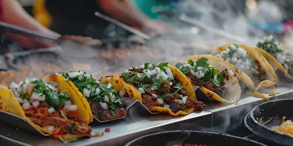

Taco

Chicken tacos are a versatile dish featuring seasoned chicken—whether shredded, diced, or ground—served in warm tortillas with various toppings like salsa, avocado, and cheese.
Ingredients:
- taco shell
- chicken
- spices
- veggies
Steps:
- Season and Cook: Pat chicken dry and coat with a spice rub; cook in a hot skillet (or grill/oven) until it reaches an internal temperature of 165°F, then let it rest before shredding or dicing
- Prepare Sauce: In the same pan, sauté onions and garlic, then add salsa, broth, or tomato paste and remaining spices to create a flavorful base for the meat.
- Combine: Add the cooked chicken to the sauce and simmer for 2–3 minutes to ensure the meat is fully coated and heated through.
- Assemble: Warm tortillas and fill with the chicken mixture, topping with fresh ingredients like cilantro, lime wedges, cheese, and pico de gallo.
Home